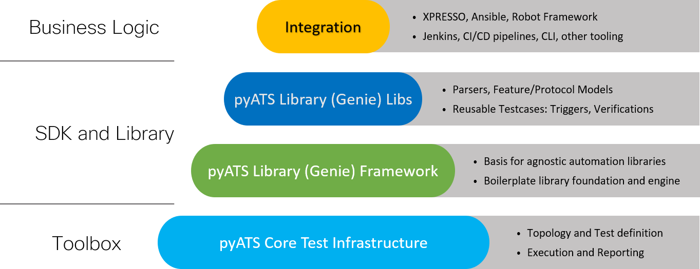

Introduction
This topic provides a high-level view of the pyATS ecosystem and describes how it helps you to automate your network operations and testing.
What is the pyATS ecosystem?
pyATS and the pyATS Library together define an ecosystem that streamlines and standardizes how you set up and run automated network tests. pyATS and the pyATS Library provide sanity, feature, solution, system, and scale test automation for any type of device or virtual device. pyATS is currently used with devices such as routers and switches, access points, firewalls, Linux servers, phones, cable CPEs, and many more.
Originally developed for internal Cisco engineers, the pyATS ecosystem is at the core of Cisco’s Test Automation Solution. It’s currently used by Cisco engineering, DevNet engineers, network engineers, and developers.
The pyATS ecosystem empowers your team to create and run consistent, repeatable, iterative, and reusable tests. pyATS provides the test framework, and the pyATS Library offers ready-to-use test components.
Tip
The pyATS ecosystem is available under Apache License Version 2.0
The following diagram describes the ecosystem in more detail.
The pyATS ecosystem can learn and profile an entire feature’s configuration and operational status. For example, with just a few commands, you can profile your system before and after a configuration change and get a detailed summary of exactly what changed.
What is pyATS?
pyATS is the test framework foundation for the ecosystem. pyATS specializes in data-driven and reusable testing for Agile, rapid development iterations.
This powerful, highly-pluggable Python® framework enables developers to start with small, simple and linear test cases, and then scale up to large, complex and asynchronous test suites.
What is the pyATS Library?
The pyATS Library (a.k.a. Genie) provides all the tools needed for network test automation, including
a pool of reusable parsers
a pool of reusable triggers
a pool of reusable APIs
a simple command line interface (no Python knowledge needed), and
many more useful libraries.
Note
The pyATS Library is the new name for what was previously known as “Genie.” You might still see some commands that refer to genie.
What is the pyATS CLI?
The pyATS Library command line interface (CLI) is a powerful, Linux-based command-line utility that offers you the library functionality directly from a Linux terminal, with no Python or programming experience required!
When you want to use the CLI, you simply type:
(pyats) $ pyats <command> [options]
For example, to get the operational state of a feature on a device, run the command:
(pyats) $ pyats learn ospf --testbed-file testbed.yaml
where ospf is the feature, and testbed.yaml is the testbed YAML file that contains information about your network devices.
To see a complete list of the CLI built-in functions, after you configure-environment and install pyATS and the pyATS library, run the command:
(pyats) $ pyats --help
When to use the pyATS Library
Use the pyATS Library when you want to automate your day-to-day DevOps activities, perform stateful validation of your network devices, or build a safety net of scalable, data-driven and reusable test cases around your network requirements. You can:
Profile the current state of your network and take a snapshot for later comparison.
Set up automated monitoring of the operational state of your devices.
Automate configuration and upgrade tasks.
Introduce changes – such as new products or releases – and see the effects on your network.
Use the power of our Pythonic library to efficiently write your own, reusable, OS-agnostic scripts.
Key benefits of pyATS
The pyATS ecosystem provides an agnostic infrastructure for rapid test development and execution. All OS/Platform and management protocol support is defined and injected through plugins, library implementations, and extensions. This includes support for third-party platforms and protocols.
Network engineers and NetDevOps can be productive day one with the pyATS Library’s readily available, holistic, and model-driven libraries, which
facilitate rapid development
encourage the use of re-usable tests, and
simplify how you write and execute test automation scripts.
Script developer key benefits
Parse device output for stateful validation.
Re-use any of the available test cases.
Connect to devices over Telnet, SSH, REST, RESTCONF, NETCONF, and YANG.
Use a single, cross-platform script instead of having to modify multiple scripts.
Verify CLI outputs with YANG and XML outputs.
Network engineer key benefits
Connect to devices and make sure that they are up, running and pingable.
Retrieve information about the network state.
Take before and after snapshots of the network, and then compare them.
Parse device output and store a snapshot, and then automatically run the same commands at specified time intervals to compare the current and previous states.
Use an available test case to verify a stable network topology after an image upgrade, for example.
Perform typical actions such as
Reload Devices,Perform Switchover,ShutNoShutBgp, andConfigUnconfigOspf.
How does the pyATS ecosystem work?
pyATS provides a framework that standardizes:
How network topologies are defined and modeled
How to programmatically interact with devices (by means of connection libraries)
How test scripts are defined and executed
How test runs are performed and how reports are generated
The pyATS Library builds on pyATS to provide:
An easy-to-use Linux style command-line interface (CLI)
Ready-to-use libraries that implement pyATS features
Parsers, device, and feature configuration models, as well as operational status models
Reusable test cases in the form of triggers and verifications
The ability to build a test suite elastically through the use of YAML-based datafiles
A mechanism for modeling network device features
See also…